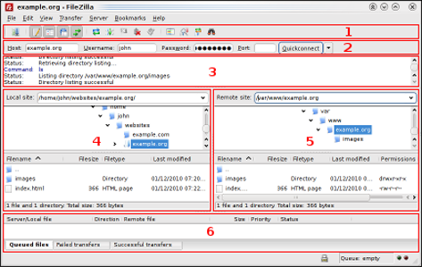

Exchange files with SEPAL¶
built-in tools¶
To exchange files with SEPAL you can use the build-in tools of the platform. that does not require any installation.
Note
Remember that these tools are limited and that big upload or download will require to use an FTP solution.
Jupyter Notebook¶
In the SEPAL application dashboard, open a new Jupyter Notebook app.
From there, The notebook dashboard enable you to work with files and directories on your system. This includes opening, creating, deleting, renaming, downloading, copying, and sharing files and directories.
Using the upload button you’ll be able to upload a file from your computer to the platform
When clicking on a file, use the download button to download it to your computer.
Warning
The download button is only available when you click on 1 single file. You can’t download a full folder at once.

Jupyterlab¶
In the SEPAL application dashboard, open a new Jupyterlab app.
From there, The file browser and File menu enable you to work with files and directories on your system. This includes opening, creating, deleting, renaming, downloading, copying, and sharing files and directories.
Files can be uploaded to the current directory of the file browser by dragging and dropping files onto the file browser, or by clicking the “Upload Files” button at the top of the file browser:
Any file in Jupyterlab can be downloaded by right-clicking its name in the file browser and selecting Download from the context menu:
See also
More information about the Jupyterlab interface in the Jupyterlab documentation.
Rstudio¶
In the SEPAL application dashboard, open a new Jupyter Notebook app.
From there The file menu (in red on the bellow image) enable you to work with files and directories on your system. This includes opening, creating, deleting, renaming and copying.

Using the upload button at the top left of the red rectangle, you will be able to upload files from your local computer.
SEPAL file explorer¶
In the SEPAL file explorer, you will be able to work with files and directories on your system. This includes deleting and downloading.
after clicking on a single file, use the download button to download the file to your local folder.

Warning
You cannot download multiple files or folder directly through this interface
FTP solution¶
SEPAL content can also be accessed via SSH File Transfer Protocol (FTP). any FTP solution might work but in this section we will present it using FileZilla. Adaptation to your favorite FTP solution should be straight forward.
FileZilla¶
If you don’t have any FTP solution installed on your local machine AND if you don’t know what is a FTP solution no worries, this documentation page is here to help you.
See also
An FTP client is software that allows you to connect to an FTP server in order to exchange files Once connected, you can publish your files so that they are accessible from your website.
FileZilla®, is a free FTP solution. The FileZilla Client not only supports FTP, but also FTP over TLS (FTPS) and SFTP (this is the one we are actually using in SEPAL). It is an open source software distributed free of charge under the terms of the GNU General Public License.
Tip
The software can be downloaded from here
Now that the presentation are done, let’s move on to the usage
Connect your FTP client to SEPAL¶
Accessing files in SEPAL is easy using FileZilla. To use FileZilla, open the application and connect to the SEPAL server by selecting Menu File -> Site Manager in the menu tab.
In the site manager pop-up click on the New Site button. Use the screenshot below as a guide for filling in the form:
Host: ssh.sepal.io
Port: 443
Protocol: SFTP – SSH File Transfer Protocol
Logon Type: Normal
User: <your SEPAL username>
Password: <your SEPAL password>
Tip
for user and password; use the credential you use to connect to the platform
Click on Connect and your SEPAL drive will appear in the right panel. In parallel, in the left panel, you’ll find the files and folders of your computer.
Use the FTP client to interact with SEPAL¶
The next step is to get familiar with FileZilla’s window layout.
Here is a quick introduction: Below the toolbar (1) and quick connect bar (2), the message log (3) displays transfer and connection related messages. Below, you can find the file listings. The left column (local pane, 4) displays the local files and directories, i.e. the stuff on the PC you’re using FileZilla on. The right column (server pane, 5) displays the files and directories on the server you are connected to. Both columns have a directory tree at the top and a detailed listing of the currently selected directory’s contents at the bottom. You can easily navigate either of the trees and lists by clicking around like in any other file manager. At the bottom of the window, the transfer queue (6) lists the to-be-transferred and already transferred files.
See also
To get more information about the usage of FileZilla, you’ll find all the information you need in their wiki page.